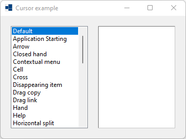
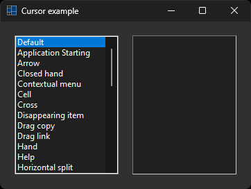
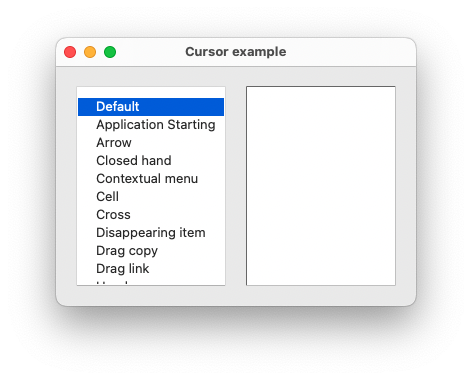
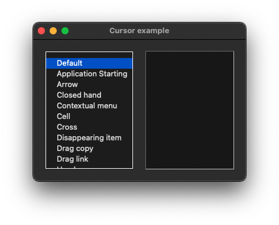
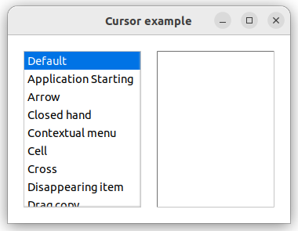
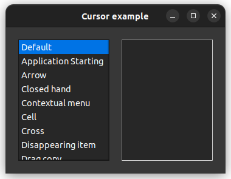

|
xtd
0.2.0
|
Loading...
Searching...
No Matches
cursors.cpp
demonstrates the use of xtd::forms::cursor component.
- Windows
- 

- macOS
- 

- Gnome
- 

#include <xtd/forms/application>
#include <xtd/forms/cursors>
#include <xtd/forms/form>
#include <xtd/forms/list_box>
#include <xtd/forms/panel>
#include <xtd/drawing/system_colors>
using namespace std;
using namespace xtd;
using namespace xtd::forms;
public:
form1() {
text("Cursor example");
start_position(form_start_position::manual);
location({200, 200});
client_size({360, 240});
list_box_loading_indicators.parent(*this);
list_box_loading_indicators.bounds({20, 20, 150, 200});
list_box_loading_indicators.anchor(anchor_styles::top | anchor_styles::left | anchor_styles::bottom);
list_box_loading_indicators.items().push_back_range({{"Default", cursors::default_cursor()}, {"Application Starting", cursors::app_starting()}, {"Arrow", cursors::arrow()}, {"Closed hand", cursors::closed_hand()}, {"Contextual menu", cursors::contextual_menu()}, {"Cell", cursors::cell()}, {"Cross", cursors::cross()}, {"Disappearing item", cursors::disappearing_item()}, {"Drag copy", cursors::drag_copy()}, {"Drag link", cursors::drag_link()}, {"Hand", cursors::hand()}, {"Help", cursors::help()}, {"Horizontal split", cursors::hsplit()}, {"I beam", cursors::ibeam()}, {"No", cursors::no()}, {"No drag", cursors::no_drag()}, {"No move 2d", cursors::no_move_2d()}, {"No move horizontal", cursors::no_move_horiz()}, {"No move vertical", cursors::no_move_vert()}, {"Open hand", cursors::open_hand()}, {"Pan east", cursors::pan_east()}, {"Pan north east", cursors::pan_ne()}, {"Pan north", cursors::pan_north()}, {"Pan north west", cursors::pan_nw()}, {"Pan south east", cursors::pan_se()}, {"Pan south", cursors::pan_south()}, {"Pan south west", cursors::pan_sw()}, {"Pan West", cursors::pan_west()}, {"Size all", cursors::size_all()}, {"Size north-east south-west", cursors::size_nesw()}, {"Size north south", cursors::size_ns()}, {"Size north-west south-east", cursors::size_nwse()}, {"Size west east", cursors::size_we()}, {"Up arrow", cursors::up_arrow()}, {"Vertical I beam", cursors::vibeam()}, {"Vertical split", cursors::vsplit()}, {"Wait", cursors::wait_cursor()}, {"Zoom in", cursors::zoom_in()}, {"Zoom out", cursors::zoom_out()}});
list_box_loading_indicators.selected_index_changed += [&] {
loading_indicator_panel.cursor(any_cast<forms::cursor>(list_box_loading_indicators.selected_item().tag()));
};
list_box_loading_indicators.selected_item("Default");
loading_indicator_panel.parent(*this);
loading_indicator_panel.border_style(border_style::fixed_3d);
loading_indicator_panel.back_color(drawing::system_colors::window());
loading_indicator_panel.bounds({190, 20, 150, 200});
loading_indicator_panel.anchor(anchor_styles::top | anchor_styles::left | anchor_styles::bottom | anchor_styles::right);
}
private:
list_box list_box_loading_indicators;
panel loading_indicator_panel;
};
auto main()->int {
application::run(form1 {});
}
Represents a window or dialog box that makes up an application's user interface.
Definition form.h:52
The xtd::forms namespace contains classes for creating Windows-based applications that take full adva...
Definition about_box.h:13
The xtd namespace contains all fundamental classes to access Hardware, Os, System,...
Definition system_report.h:17
Generated on Mon Nov 13 2023 20:39:51 for xtd by Gammasoft. All rights reserved.